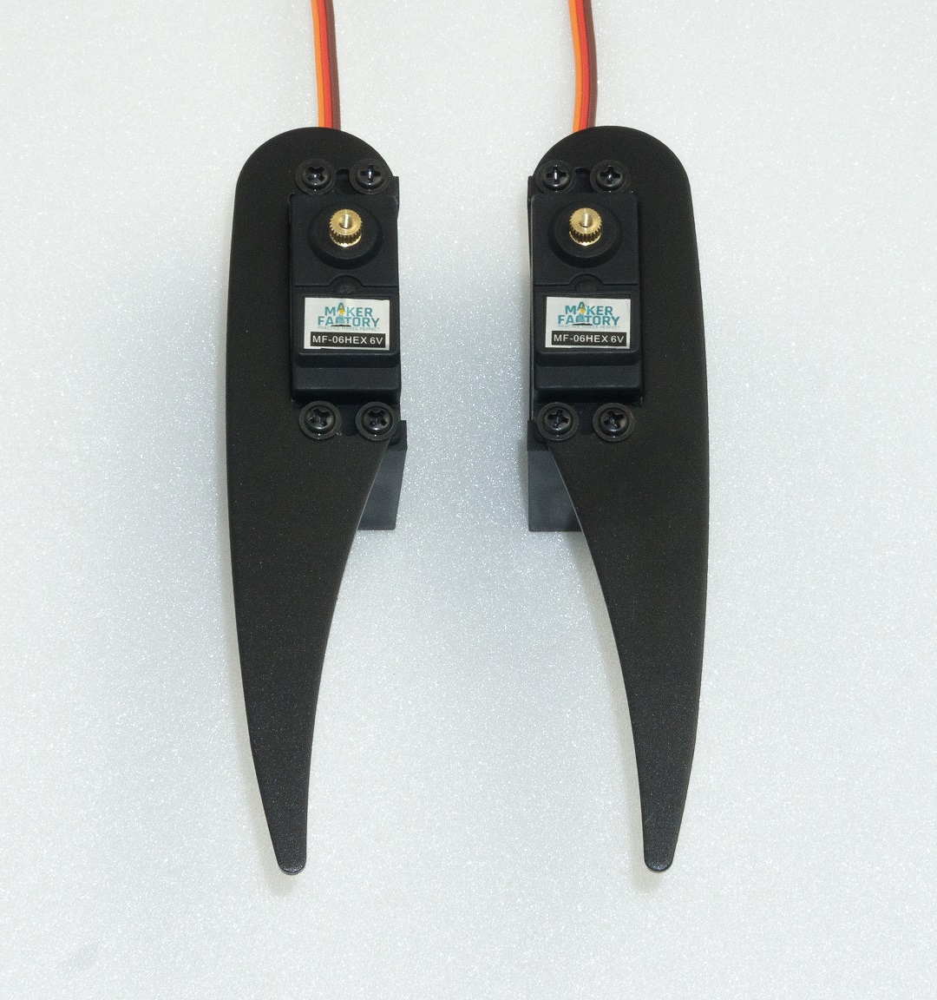
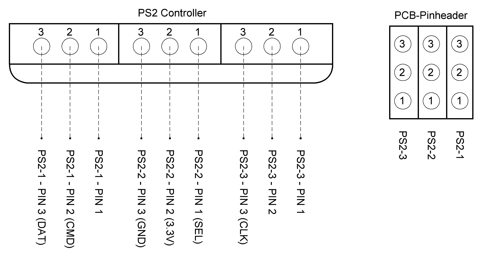

Assembling the mechanical parts¶
The following illustrations illustrate the mechanical assembly.
Caution
When tightening the plastic screws, make sure that they are not screwed too tightly into the plastic and that the plastic holders are not damaged! If you remove a screw from a plastic part and then screw it in again, first turn the screw anticlockwise until you notice that the screw "engages". At this point the screw is "engaged" in the existing thread. The screw can then be easily screwed into the thread that has already been created during the first screwing in. If the self-tapping plastic screw is screwed in without using this method, a new thread may occur. This weakens the material and the tensile strength as well as the hold are no longer guaranteed.
Mounting servos¶
Mount the servos as shown in the following illustrations. You will need 3 pairs of left and 3 pairs of right legs. Most aluminium parts have a slightly rounded side due to the manufacturing process (punching process). You can use the parts in both directions during assembly. The nicer side should point forward in the direction of travel. The rounded side of the top and bottom plates should point in the same direction (top or bottom). Requiered tool:1x PH2 Cross Screwdriver The screws are packed in plastic bags in the kit. Figure 19 shows the type of screws used for servo mounting. A total of 6x legs must be assembled (3 left and 3 right).
Figure 19
Figure 20 shows a leg of the Robobug. The leg elements are called "Coxa", "Femur" and "Tibia".

Figure 20
Place the servo in the plastic U-angle and the aluminium leg thereon (pay attention to the left and right leg and the round edge). The servo cable is pushed through the oval opening in the U-angle. Screw the leg together with four plastic screws. When screwing the parts together, align them so that they are centred in the U-angle, the aluminium legs lie against the servo and ensure that nothing is strained or warped. If necessary, loosen the screws a little to relax the mechanics and then carefully tighten the screws crosswise.

Figure 21
The Coxa servo and femur servo holder must be mounted 6 times (3 left and 3 right). First insert a servo into the holder and screw it on. Only then is the second servo plugged in and screwed in. The servo cable of the Coxa servo is inserted through the round opening at the top and the servo cable for the femur servo is inserted through the large oval opening as with the U-angle mounting. Screw the servos together with four plastic screws. When screwing the servos together, align them so that they are centred in the plastic holder and are not tensed. If necessary, loosen the screws a little to release the mechanical tension and then carefully tighten the screws crosswise.

Figure 22

Figure 23
Mounting of bearings¶
Required tool: 10 mm hexagon socket (from a socket wrench set) or comparable tool as a tool for mounting the bearings Push the bearings into the aluminium parts as shown in the following illustrations. Here a hexagon socket wrench or a comparable tool can be helpful. Do not use rough force, this can damage the base plate and the ball bearings! Avoid tilting, with some sensing the position can be pressed in without great resistance.
→ Make sure that the edge of the bearing is flush with the aluminium part. If a bearing cannot be pressed in, it may be caused by a protruding burr or too much paint. You can easily rework the bore with a knife (e.g., cutter knife for wallpaper or floors) or with a file. If the bore has become too large, the bearing can be glued to the flange of the bearing with a small drop of glue (e.g., Uhu® Endfest or comparable). The bearings may come loose during final assembly due to uneven pressing of the cylindrical pins into the plastic holders. This is, however, not too bad, as the pins can easily be pushed back into the intended hole. Sticking should be a last resort. The bearings clamp sufficiently strongly in the holes for the operation of the robot even without glue.

Figure 24
→ Figure 24 shows the bottom plate from above! Figure 25 shows how you can press the bearings into the base plate using the femur aluminium parts as a support. The hexagon wrench must press against the edge of the bearing. Masking the aluminium parts with painter tape protects them from scratching. Other parts that can be found in the hobby workshop can also be used as underlay.
→ Do not use adhesive tape that cannot be removed without leaving a residue.

Figure 25
The femur counter bearing must be assembled a total of 6 times.

Figure 26
Figure 27 shows how you can push the bearing into the aluminium part by hand. The bearing should snap into the bore provided with a bold push.

Figure 27
Make sure that the edge of the bearing is flush with the aluminium part.

Figure 28
Caution
These screws (all M2) are now already provided with a screw lock.
Required tool:
- PH1 Phillips screwdriver
- Small flat nose pliers or wrench for M2 nut (SW4)
- Screw locking (medium strength)
Mounting the servo discs on the upper plate:
→ Figure 29 shows the top plate from above!

Figure 29
→ Figure 30 shows the top plate from below!

Figure 30
The femur servo mount must be mounted a total of 6 times.

Figure 31

Figure 32
Mounting the spacer¶
Next, screw together the spacers (30 mm long) for the legs, top and bottom plates as shown in Figure 33. A total of 12 screwed spacers are required.
Required tool: 2x SW 5.5mm open-end wrench
Then fit a screwed spacer to each femur counter bearing. Insert the threaded side through the counter bearing and fix it with an M3 nut. It is sufficient if the spacers are only tightened by hand. Do not tighten these screws until the assembly is complete. This way you still have the possibility to easily adjust everything during assembly.

Figure 33
Figure 34
Do the same with the base plate.
→ Figure 35 shows the bottom plate from above!
Figure 35
Mounting the servos on the top plate¶
Mount the servos with the M3 screws (M3 x 6 mm, large head diameter) as shown in Figure 36.
→For mounting the servos with the servo discs, always use the M3 x 6 mm screws (servo mounting screws) with the larger 6 mm head is used. The M3 x 6 mm screws with the smaller 5 mm head are used for the spacers!
Insert the servos into the teeth of the previously mounted servo disks. Proceed carefully so that the servos do not twist during insertion. If it should happen that a servo has rotated from the middle position during assembly, then bring the servo back to the middle position with the aid of the Hexapod Robot Board and the "ServoCenter" software. This procedure has already been described in Chapter 12.
If, due to the teeth of the servo disk or the general mechanical tolerances, you are not yet able to align the legs too precisely, this is not a problem. Adjust the leg as mechanically as possible, as shown in the illustration. An exact calibration is done after the assembly with the help of the software.
→ The servo mounting screws (PH2 (M3 x 6 mm, large head diameter) are not yet equipped with a screw lock! Only when the robot has been completely assembled and calibrated can these screws be removed and secured!
Required tool: PH2 Phillips screwdriver
Figure 36
Figure 36 illustrates the Hexapod body viewed from "above". The two front and the two rear legs are installed in such a way that they point outwards at an angle of 45° without twisting the centre position of the servo (centre position). You can orient yourself on the cross-paths in the upper plate at an angle of 45°. The two middle legs (left and right side) are installed straight outwards at an angle of 90° to the body.
→ Please also refer to Figure 37 on the next page.

Figure 37
Mount bottom plate¶
Mounting the bottom plate requires some skill. Place the top plate with its back on the table as shown in Figure 38. Push the cylinder pins of the base plate into the plastic holders of the top plate, starting from the front or rear, all the way round. Do not push the pins completely in the first time, but repeat the working step and press the cylinder pin only a few millimetres into the plastic each time it circulates. This prevents the component from becoming strained!
→ Place an underlay, such as a cardboard box, between the component and the table so that you do not scratch the table with the screw heads! The foam from the packaging for instance is very suitable for this purpose. Do not use force. This can damage the servos, the base plate and the ball bearings! You can set the correct distance between the bearing and the plastic holder using a 2.5 mm Hexagon key. The Hexagon key serves as a distance gauge, see Figure 41. Finally, the upper plate is screwed together with spacers. Use the M3 x 6 screws (small head diameter 5 mm) for this purpose.
Required tool:
- PH2 Phillips screwdriver
- Underlay e.g., cardboard box;
→ Figure 38 shows the bottom side of the robot!

Figure 38
→ Figure 39 shows the top side of the robot!
Figure 39
Figure 40 shows how the dowel pins are only slightly pressed in to fix them in the plastic. Only when all the dowel pins have been fixed in the holes of the plastic holders are they pressed in at a distance (2.5 mm). To achieve the correct distance, place the Hexagon key between the bearing and the plastic holder and press the cylinder pins into the plastic holder with moderate force. If a cylindrical pin has been pressed in too far by mistake, you can correct this with a wide slotted screwdriver by gently levering it out. Make sure, however, that the aluminium parts are not damaged (scratched). After all bearings have been pressed in and adjusted to the correct distance, screw them together with the spacers. Figure 41 shows how to set the correct distance using the 2.5 mm hexagon wrench as the spacer.
Figure 40
Figure 41
Mounting the Receiver and Hexapod Robot Board¶
Now the radio receiver for the gamepad is connected to the robot board and mounted. The receiver is fixed to the underside of the robot board with the supplied double-sided adhesive tape.
→ The receiver and the connection cable must first be connected to each other. Connect the wide receiver plug to the receiver. When connecting the receiver to the robot board, make sure that the polarity of the connectors is correct.
Required tool:
- Scissors
- PH2 Phillips screwdriver
- Open-end wrench SW 5.5 mm
Plug the cable into the receiver as shown in Figure 42. The "POWER" and "RX" labels point upwards in the illustration. Use the same colour sequence as shown in the illustration.
Figure 42
Shorten the double-sided adhesive tape to approx. 25 mm using scissors. Then peel off one side of the protective film of the adhesive tape and stick this side onto the robot board.

Figure 43
Now peel off the other side of the protective film and affix the receiver. Make sure that the housing side with the two red LEDs locks with the "thick" contacts (see arrow in the illustration) of the loudspeaker. If the housing protrudes too far into the contacts of the loudspeaker, the housing will press against the contacts of the loudspeaker when mounting the circuit board.

Figure 44
Now connect the cable to the robot board. The colours are combined in the plugs to 3 wires each. From left (MicroSD card holder position) to right (battery plug position): White, grey, purple -> White points to outer edge of board Blue, green, yellow -> Blue points to the outer edge of the board Orange, red brown -> Orange points to the outer edge of the board.
→ Figure 45b shows a detail enlargement of Figure 45.
Figure 45a
Figure 45b
Now mount the robot board with the four 15 mm spacers. The threaded side of each spacer is inserted into the top plate and fastened with an M3 nut.
→ Do not tighten the M3 nuts too tightly as this will allow you to readjust them easily to mount the PCB without tension. Only when the board has been fixed to the spacers with four screws M3 x 6 mm (small head diameter 5 mm), tighten the M3 nuts. In this way you can align the board cleanly.

Figure 46
Figure 47 shows the pin assignment of the receiver (left) and the pin assignment of the robot board (right).

Figure 47
Mounting the legs¶
Try to mount the legs the as well as you can. Minor deviations do not play a role and cannot be avoided by the mechanical tolerances and by the coarse teeth of the servo disks.
→ The legs will be exactly adjusted later by software! Figure 48 (see also Figure 20) shows the basic configuration of a Hexapod leg. It should be noted that the thigh (femur) is aligned parallel to the ground ("ground" in the picture).
The pivot point of the shin ("tibia") is parallel to the body ("body"). When the leg is fully adjusted, there is a 90° angle between the femur and the tibia. The arrangement between "body" and "femur" is parallel in one line. The difference in height does not play a role here.
Figure 49 (see also Figure 17) once again shows the pin assignment of the robot board for the leg servos. The following list shows wherein each servo is connected. Basically, the connection sequence "COXA", "FEMUR", "TIBA" always applies; then follows the plug contact "SAx", which remains free!

Figure 48
Now connect the servos to the board. With the "ServoCenter" programme you can always check during assembly whether the leg is still in the basic position.
Figure 49
→ After mounting each leg, use the "ServoCenter" programme to check whether the leg is in the basic configuration or whether an error has crept in due to turning the servo while mounting!
| RR (right rear) | LR (left rear) |
| S0 = Coxa | S9 = Coxa |
| S1 = Femur | S10 = Femur |
| S2 = Tibia | S11 = Tibia |
| RM (right middle) | LM (left middle) |
| S3 = Coxa | S12 = Coxa |
| S4 = Femur | S13 = Femur |
| S5 = Tibia | S14 = Tibia |
| RF (right front) | LF (left front) |
| S6 = Coxa | S15 = Coxa |
| S7 = Femur | S16 = Femur |
| S8 = Tibia | S17 = Tibia |
Coxa = hip
Femur = thigh
Tibia = leg or shine-bone
First mount the thighs (“femur”) as shown in Figure 50. Screw the thighs to the servos (M3 x 6 mm screws, large head diameter 6 mm). Then assemble the legs “tibia” and fix them with the M3 x 6 screws (large head diameter 6 mm). It is helpful to lift the robot with the help of a cardboard box. If you have a 3D printer, you can also print out the robot stand. The files can be found free of charge at Conrad.com on the respective product website.
→ After the robot is completely assembled and adjusted, you should provide the screws, which connect the servo disk with the servo, with a small drop of screw lock. During operation they will loosen quickly and may get lost!
Required tool:
- PH2 Phillips screwdriver
- Open-end wrench SW 5.5 mm

Figure 50
Despite the angled tibia servos, "femur" must be parallel to the floor at the end and "tibia" parallel to the body. The "femur" and "tibia" make a 90° angle; the servos themselves are still in the middle position! Figure 52 shows the Robobug when all legs are fully assembled and in the home position. Ideally, the red line (Figure 51) would run exactly in the middle of the screw heads. Since the servo disks do not allow this due to the toothing and the mounting tolerance, it may be slightly off the mark with some legs. This is not bad, the exact alignment to the middle will be done later by software.

Figure 51

Figure 52
Now mount the counter bearings.
→ The U holder has two holes, use the hole facing the cable opening.
When pressing in the dowel pins, proceed in the same way as when pressing in the dowel pins of the base plate. The distance between the bearing and the plastic part here is 1.5 mm. You can also use an Hexagon key as a distance gauge here. Then screw the spacer on each leg with a M3 x 6 mm screw (small head diameter 5 mm) as shown in Figure 53.
Figure 53
The 1.5 mm hexagon key is placed between the ball bearing and the plastic part and the cylindrical pin is pressed in until it stops. Also, in this case, press the cylindrical pins only alternately (first one side then the other) piece by piece into the plastic so as not to tilt the holder.
→ If you hold the robot at an angle, you can hang the Hexagon key over the cylinder pin without it falling down.
Figure 55 shows the Robobug with the legs fully assembled and in the basic position.

Figure 54
Figure 55
Laying the cables¶
Lay the cables as shown in the illustrations. Use the supplied cable ties for this purpose. After the cable ties have been tightened, cut off the protruding part of the cable tie. A clean cable laying gives the robot a very high-quality appearance!
→ As long as you have not finished aligning the cables, you should not tighten the cable ties too tightly. This way you can make small corrections easily.
Required tool: Electronic side cutter

Figure 56

Figure 57
Figure 58

Figure 59

Figure 60
Figure 61
Figure 62
Installing the battery¶
The battery is mounted edgeways with the supplied Velcro fastener as shown in the illustrations. To do this, shorten the Velcro fastener to approx. 25 cm. Tighten the Velcro so that the battery has a firm grip on the battery plate and cannot slip during operation.

Figure 63
Then run the cable through the top plate as shown in Figure 64a. Screw the battery retaining plate to the lower plate. Use the screws M4 x 5 mm for this purpose.
Figure 64a
In Figure 64b (see also Figure 7) you can see how the battery is plugged into the Robobug. The plug is protected against reverse polarity and cannot therefore be plugged in the wrong way.
Figure 64b
Mounting the rubber feet¶
Slide the supplied rubber feet onto the ends of the legs.
You can also secure the rubber caps with some glue (e.g., Uhu® All Purpose Glue or similar) so that they are not lost during operation.
→ The rubber feet not only secure a good grip on the ground, but also ensure that the aluminium legs do not scratch the ground (floor, table etc.).

Figure 65
Setting jumpers¶
Finally, the two jumpers are plugged in. The jumper for the infrared receiver is plugged on "IR-U"; the jumper J7 is plugged only on one pin.
→ If you connect jumper J7 to both pins, the gamepad will be deactivated!
Figure 66